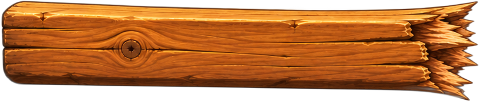
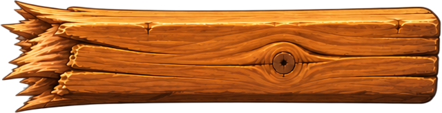
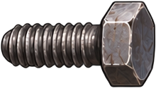
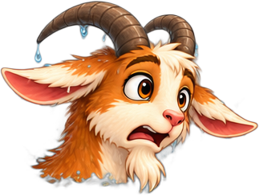
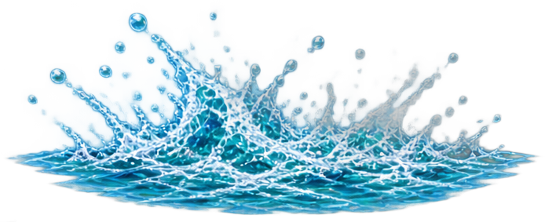

The Goat Bridge
Well. That happened.
PickEarn piecesAssembleDrive
38 marks







Top beam was 3 m. The posts are 4 m apart. The right post had nothing to hold on to. The goat is fine. Mostly.
What went wrong
Top beam · 3 m
needed 6 − 2 = 4 m
Right post · 2 m
right length, nothing on top
Goat
wet, dignity bruised
You keep all your pieces. Only the number changes.
🏅
Wreck it · badge earned
Every engineer breaks one on purpose.